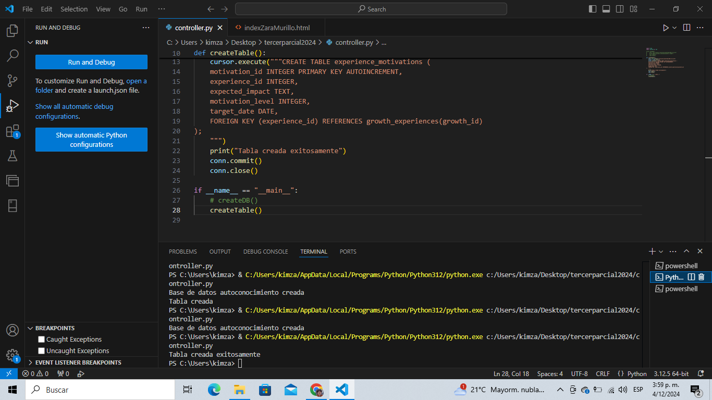
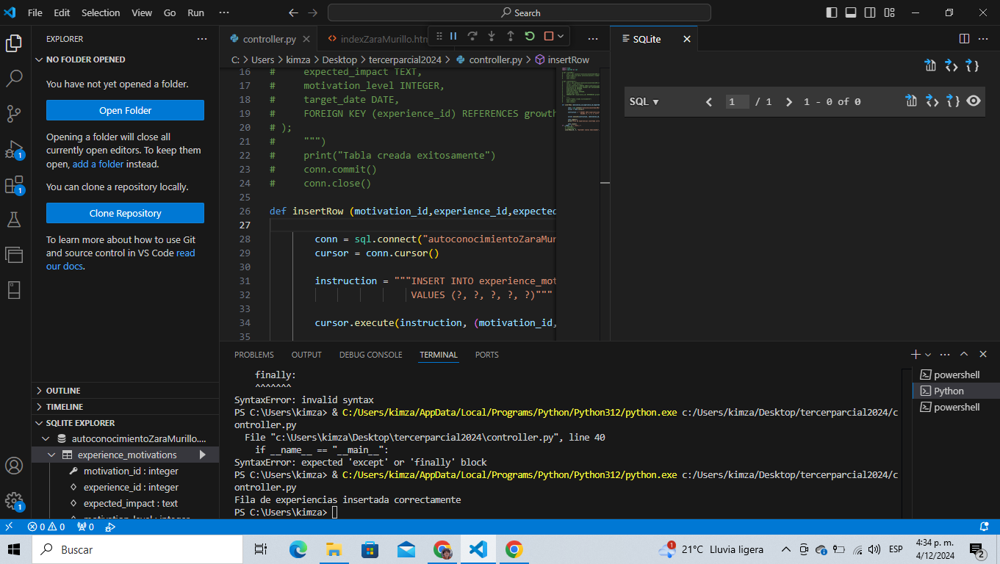

import time
import sqlite3 as sql
def createDB():
conn = sql.connect("autoconocimiento.db")
print("Base de datos autoconocimiento creada")
conn.commit()
conn.close()
def createTable():
conn = sql.connect("autoconocimiento.db")
cursor = conn.cursor()
cursor.execute("""CREATE TABLE experience_motivations (
motivation_id INTEGER PRIMARY KEY AUTOINCREMENT,
experience_id INTEGER,
expected_impact TEXT,
motivation_level INTEGER,
target_date DATE,
FOREIGN KEY (experience_id) REFERENCES growth_experiences(growth_id)
);
""")
print("Tabla creada")
conn.commit()
conn.close()
if __name__ == "__main__":
createDB()
createTable()

def createTable():
conn = sql.connect("autoconocimientoZaraMurillo.db")
cursor = conn.cursor()
cursor.execute("""CREATE TABLE experience_motivations (
motivation_id INTEGER PRIMARY KEY AUTOINCREMENT,
experience_id INTEGER,
expected_impact TEXT,
motivation_level INTEGER,
target_date DATE,
FOREIGN KEY (experience_id) REFERENCES growth_experiences(growth_id)
);
""")
print("Tabla creada exitosamente")
conn.commit()
conn.close()

def insertRow (motivation_id,experience_id,expected_impact,motivation_level,target_date):
conn = sql.connect("autoconocimientoZaraMurillo.db")
cursor = conn.cursor()
instruction = """INSERT INTO experience_motivations (motivation_id, experience_id, expected_impact, motivation_level, target_date)
VALUES (?, ?, ?, ?, ?)"""
cursor.execute(instruction, (motivation_id, experience_id, expected_impact, motivation_level, target_date))
conn.commit()
print("Fila de experiencias insertada correctamente")
conn.close()
if __name__ == "__main__":
# createDB()
# createTable()
insertRow(10, 5, "Aprender nuevas habilidades", 8, "2024-12-31")
